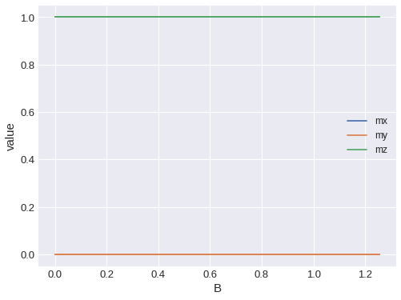
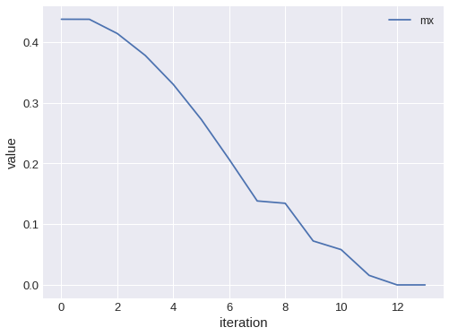

Dev test¶
[1]:
import os
import micromagneticdata as md
[2]:
dirname = os.path.join('..', '..', 'micromagneticdata', 'tests', 'test_sample')
[3]:
data = md.Data(name='system_name', dirname=dirname)
[4]:
data.n
[4]:
7
[5]:
data.info
[5]:
| drive_number | date | time | driver | t | n | Hmin | Hmax | |
|---|---|---|---|---|---|---|---|---|
| 0 | 0 | 2021-01-01 | 15:58:14 | TimeDriver | 2.500000e-11 | 25.0 | NaN | NaN |
| 1 | 1 | 2021-01-01 | 15:58:15 | TimeDriver | 1.500000e-11 | 15.0 | NaN | NaN |
| 2 | 2 | 2021-01-01 | 15:58:17 | TimeDriver | 5.000000e-12 | 10.0 | NaN | NaN |
| 3 | 3 | 2021-01-01 | 15:58:18 | MinDriver | NaN | NaN | NaN | NaN |
| 4 | 4 | 2021-01-01 | 15:58:19 | TimeDriver | 5.000000e-12 | 5.0 | NaN | NaN |
| 5 | 5 | 2021-01-01 | 15:58:20 | MinDriver | NaN | NaN | NaN | NaN |
| 6 | 6 | 2021-01-01 | 15:58:21 | HysteresisDriver | NaN | 21.0 | [0, 0, 1000000.0] | [0, 0, -1000000.0] |
[6]:
drive = data[0]
[7]:
drive.n
[7]:
25
[8]:
drive.info
[8]:
{'drive_number': 0,
'date': '2021-01-01',
'time': '15:58:14',
'driver': 'TimeDriver',
't': 2.5e-11,
'n': 25}
[9]:
data.selector()
[10]:
drive = data[-1]
[11]:
drive.x
[11]:
'B'
[12]:
drive.info
[12]:
{'drive_number': 6,
'date': '2021-01-01',
'time': '15:58:21',
'driver': 'HysteresisDriver',
'Hmin': [0, 0, 1000000.0],
'Hmax': [0, 0, -1000000.0],
'n': 21}
[13]:
print(drive.mif)
# MIF 2.2
SetOptions {
basename system_name
scalar_output_format %.12g
scalar_field_output_format {text %#.15g}
vector_field_output_format {text %#.15g}
}
# BoxAtlas for main_atlas
Specify Oxs_BoxAtlas:main_atlas {
xrange { 0.0 1e-07 }
yrange { 0.0 5e-08 }
zrange { 0.0 2e-08 }
name main
}
# RectangularMesh
Specify Oxs_RectangularMesh:mesh {
cellsize { 5e-09 5e-09 5e-09 }
atlas :main_atlas
}
# UniformExchange
Specify Oxs_UniformExchange:exchange {
A 1.3e-11
}
# FixedZeeman
Specify Oxs_FixedZeeman:zeeman {
field {0.0 0.0 1000000.0}
}
# m0 file
Specify Oxs_FileVectorField:m0 {
file m0.omf
atlas :main_atlas
}
# m0_norm
Specify Oxs_VecMagScalarField:m0_norm {
field :m0
}
# CGEvolver
Specify Oxs_CGEvolve:evolver {
}
# OxS_UZeeman
Specify Oxs_UZeeman {
Hrange {
{ 0 0 1000000.0 0 0 -1000000.0 20 }
{ 0 0 -1000000.0 0 0 1000000.0 20 }
}
}
# MinDriver
Specify Oxs_MinDriver {
evolver :evolver
mesh :mesh
Ms :m0_norm
m0 :m0
stopping_mxHxm 0.1
}
Destination table mmArchive
Destination mags mmArchive
Schedule DataTable table Stage 1
Schedule Oxs_MinDriver::Magnetization mags Stage 1
[14]:
drive.m0
[14]:
Field(mesh=Mesh(region=Region(p1=(0.0, 0.0, 0.0), p2=(1e-07, 5e-08, 2e-08)), n=(20, 10, 4), bc='', subregions={}), dim=3)
[15]:
drive.table.mpl(x='B', y=['mx', 'my', 'mz'])

[16]:
drive.n
[16]:
41
[17]:
drive[0]
[17]:
Field(mesh=Mesh(region=Region(p1=(0.0, 0.0, 0.0), p2=(1e-07, 5e-08, 2e-08)), n=(20, 10, 4), bc='', subregions={}), dim=3)
[18]:
list(drive)
[18]:
[Field(mesh=Mesh(region=Region(p1=(0.0, 0.0, 0.0), p2=(1e-07, 5e-08, 2e-08)), n=(20, 10, 4), bc='', subregions={}), dim=3),
Field(mesh=Mesh(region=Region(p1=(0.0, 0.0, 0.0), p2=(1e-07, 5e-08, 2e-08)), n=(20, 10, 4), bc='', subregions={}), dim=3),
Field(mesh=Mesh(region=Region(p1=(0.0, 0.0, 0.0), p2=(1e-07, 5e-08, 2e-08)), n=(20, 10, 4), bc='', subregions={}), dim=3),
Field(mesh=Mesh(region=Region(p1=(0.0, 0.0, 0.0), p2=(1e-07, 5e-08, 2e-08)), n=(20, 10, 4), bc='', subregions={}), dim=3),
Field(mesh=Mesh(region=Region(p1=(0.0, 0.0, 0.0), p2=(1e-07, 5e-08, 2e-08)), n=(20, 10, 4), bc='', subregions={}), dim=3),
Field(mesh=Mesh(region=Region(p1=(0.0, 0.0, 0.0), p2=(1e-07, 5e-08, 2e-08)), n=(20, 10, 4), bc='', subregions={}), dim=3),
Field(mesh=Mesh(region=Region(p1=(0.0, 0.0, 0.0), p2=(1e-07, 5e-08, 2e-08)), n=(20, 10, 4), bc='', subregions={}), dim=3),
Field(mesh=Mesh(region=Region(p1=(0.0, 0.0, 0.0), p2=(1e-07, 5e-08, 2e-08)), n=(20, 10, 4), bc='', subregions={}), dim=3),
Field(mesh=Mesh(region=Region(p1=(0.0, 0.0, 0.0), p2=(1e-07, 5e-08, 2e-08)), n=(20, 10, 4), bc='', subregions={}), dim=3),
Field(mesh=Mesh(region=Region(p1=(0.0, 0.0, 0.0), p2=(1e-07, 5e-08, 2e-08)), n=(20, 10, 4), bc='', subregions={}), dim=3),
Field(mesh=Mesh(region=Region(p1=(0.0, 0.0, 0.0), p2=(1e-07, 5e-08, 2e-08)), n=(20, 10, 4), bc='', subregions={}), dim=3),
Field(mesh=Mesh(region=Region(p1=(0.0, 0.0, 0.0), p2=(1e-07, 5e-08, 2e-08)), n=(20, 10, 4), bc='', subregions={}), dim=3),
Field(mesh=Mesh(region=Region(p1=(0.0, 0.0, 0.0), p2=(1e-07, 5e-08, 2e-08)), n=(20, 10, 4), bc='', subregions={}), dim=3),
Field(mesh=Mesh(region=Region(p1=(0.0, 0.0, 0.0), p2=(1e-07, 5e-08, 2e-08)), n=(20, 10, 4), bc='', subregions={}), dim=3),
Field(mesh=Mesh(region=Region(p1=(0.0, 0.0, 0.0), p2=(1e-07, 5e-08, 2e-08)), n=(20, 10, 4), bc='', subregions={}), dim=3),
Field(mesh=Mesh(region=Region(p1=(0.0, 0.0, 0.0), p2=(1e-07, 5e-08, 2e-08)), n=(20, 10, 4), bc='', subregions={}), dim=3),
Field(mesh=Mesh(region=Region(p1=(0.0, 0.0, 0.0), p2=(1e-07, 5e-08, 2e-08)), n=(20, 10, 4), bc='', subregions={}), dim=3),
Field(mesh=Mesh(region=Region(p1=(0.0, 0.0, 0.0), p2=(1e-07, 5e-08, 2e-08)), n=(20, 10, 4), bc='', subregions={}), dim=3),
Field(mesh=Mesh(region=Region(p1=(0.0, 0.0, 0.0), p2=(1e-07, 5e-08, 2e-08)), n=(20, 10, 4), bc='', subregions={}), dim=3),
Field(mesh=Mesh(region=Region(p1=(0.0, 0.0, 0.0), p2=(1e-07, 5e-08, 2e-08)), n=(20, 10, 4), bc='', subregions={}), dim=3),
Field(mesh=Mesh(region=Region(p1=(0.0, 0.0, 0.0), p2=(1e-07, 5e-08, 2e-08)), n=(20, 10, 4), bc='', subregions={}), dim=3),
Field(mesh=Mesh(region=Region(p1=(0.0, 0.0, 0.0), p2=(1e-07, 5e-08, 2e-08)), n=(20, 10, 4), bc='', subregions={}), dim=3),
Field(mesh=Mesh(region=Region(p1=(0.0, 0.0, 0.0), p2=(1e-07, 5e-08, 2e-08)), n=(20, 10, 4), bc='', subregions={}), dim=3),
Field(mesh=Mesh(region=Region(p1=(0.0, 0.0, 0.0), p2=(1e-07, 5e-08, 2e-08)), n=(20, 10, 4), bc='', subregions={}), dim=3),
Field(mesh=Mesh(region=Region(p1=(0.0, 0.0, 0.0), p2=(1e-07, 5e-08, 2e-08)), n=(20, 10, 4), bc='', subregions={}), dim=3),
Field(mesh=Mesh(region=Region(p1=(0.0, 0.0, 0.0), p2=(1e-07, 5e-08, 2e-08)), n=(20, 10, 4), bc='', subregions={}), dim=3),
Field(mesh=Mesh(region=Region(p1=(0.0, 0.0, 0.0), p2=(1e-07, 5e-08, 2e-08)), n=(20, 10, 4), bc='', subregions={}), dim=3),
Field(mesh=Mesh(region=Region(p1=(0.0, 0.0, 0.0), p2=(1e-07, 5e-08, 2e-08)), n=(20, 10, 4), bc='', subregions={}), dim=3),
Field(mesh=Mesh(region=Region(p1=(0.0, 0.0, 0.0), p2=(1e-07, 5e-08, 2e-08)), n=(20, 10, 4), bc='', subregions={}), dim=3),
Field(mesh=Mesh(region=Region(p1=(0.0, 0.0, 0.0), p2=(1e-07, 5e-08, 2e-08)), n=(20, 10, 4), bc='', subregions={}), dim=3),
Field(mesh=Mesh(region=Region(p1=(0.0, 0.0, 0.0), p2=(1e-07, 5e-08, 2e-08)), n=(20, 10, 4), bc='', subregions={}), dim=3),
Field(mesh=Mesh(region=Region(p1=(0.0, 0.0, 0.0), p2=(1e-07, 5e-08, 2e-08)), n=(20, 10, 4), bc='', subregions={}), dim=3),
Field(mesh=Mesh(region=Region(p1=(0.0, 0.0, 0.0), p2=(1e-07, 5e-08, 2e-08)), n=(20, 10, 4), bc='', subregions={}), dim=3),
Field(mesh=Mesh(region=Region(p1=(0.0, 0.0, 0.0), p2=(1e-07, 5e-08, 2e-08)), n=(20, 10, 4), bc='', subregions={}), dim=3),
Field(mesh=Mesh(region=Region(p1=(0.0, 0.0, 0.0), p2=(1e-07, 5e-08, 2e-08)), n=(20, 10, 4), bc='', subregions={}), dim=3),
Field(mesh=Mesh(region=Region(p1=(0.0, 0.0, 0.0), p2=(1e-07, 5e-08, 2e-08)), n=(20, 10, 4), bc='', subregions={}), dim=3),
Field(mesh=Mesh(region=Region(p1=(0.0, 0.0, 0.0), p2=(1e-07, 5e-08, 2e-08)), n=(20, 10, 4), bc='', subregions={}), dim=3),
Field(mesh=Mesh(region=Region(p1=(0.0, 0.0, 0.0), p2=(1e-07, 5e-08, 2e-08)), n=(20, 10, 4), bc='', subregions={}), dim=3),
Field(mesh=Mesh(region=Region(p1=(0.0, 0.0, 0.0), p2=(1e-07, 5e-08, 2e-08)), n=(20, 10, 4), bc='', subregions={}), dim=3),
Field(mesh=Mesh(region=Region(p1=(0.0, 0.0, 0.0), p2=(1e-07, 5e-08, 2e-08)), n=(20, 10, 4), bc='', subregions={}), dim=3),
Field(mesh=Mesh(region=Region(p1=(0.0, 0.0, 0.0), p2=(1e-07, 5e-08, 2e-08)), n=(20, 10, 4), bc='', subregions={}), dim=3)]
[19]:
#drive.ovf2vtk()
[20]:
drive.slider()
[21]:
data[-2].info
[21]:
{'drive_number': 5,
'date': '2021-01-01',
'time': '15:58:20',
'driver': 'MinDriver'}
[22]:
data[-2].n
[22]:
14
[23]:
data[-2].table.mpl(y=['mx'])
